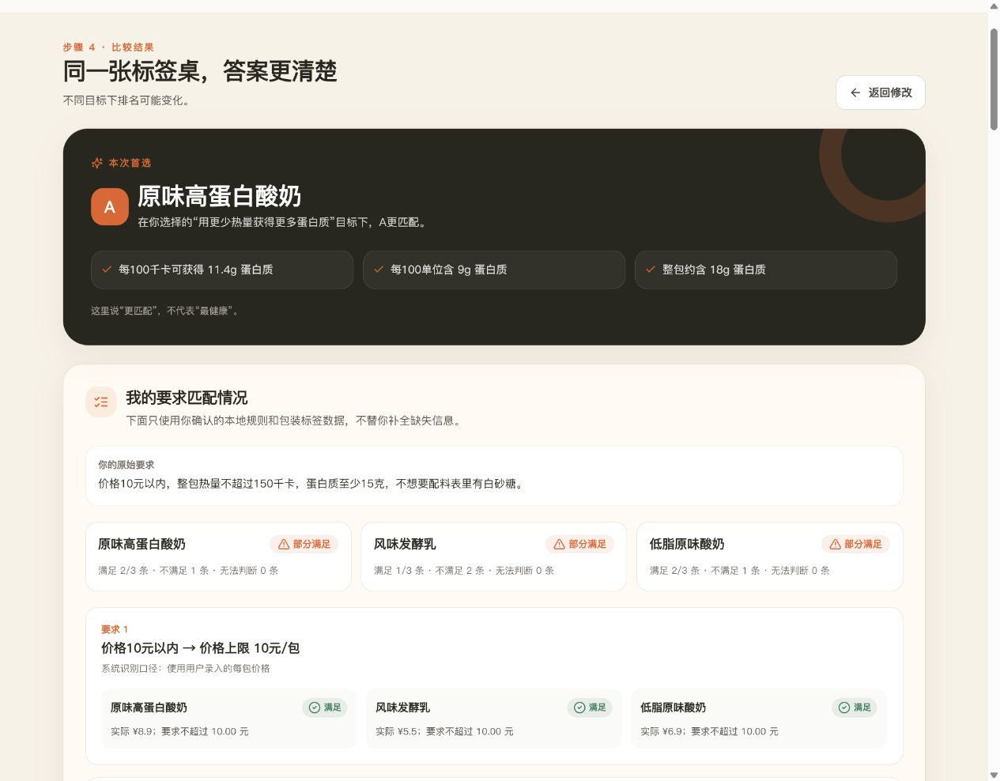
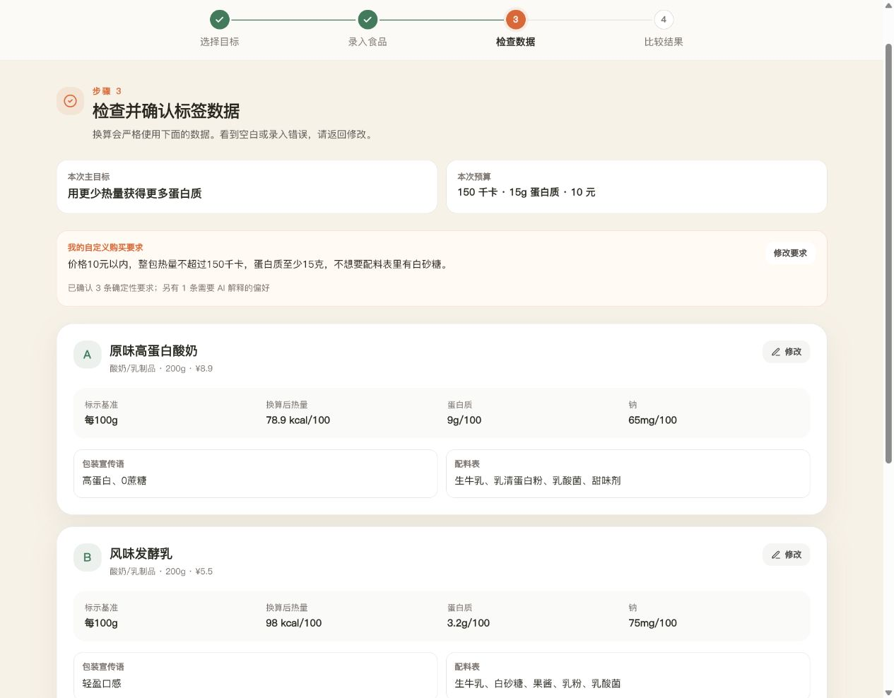
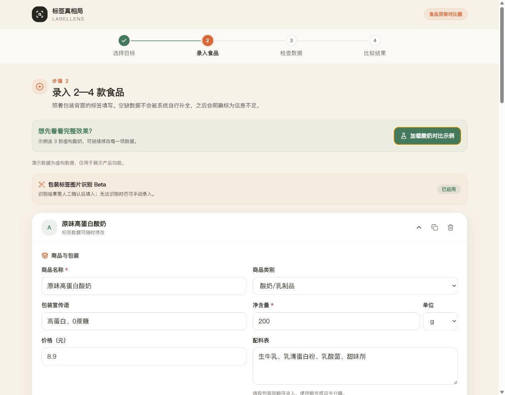
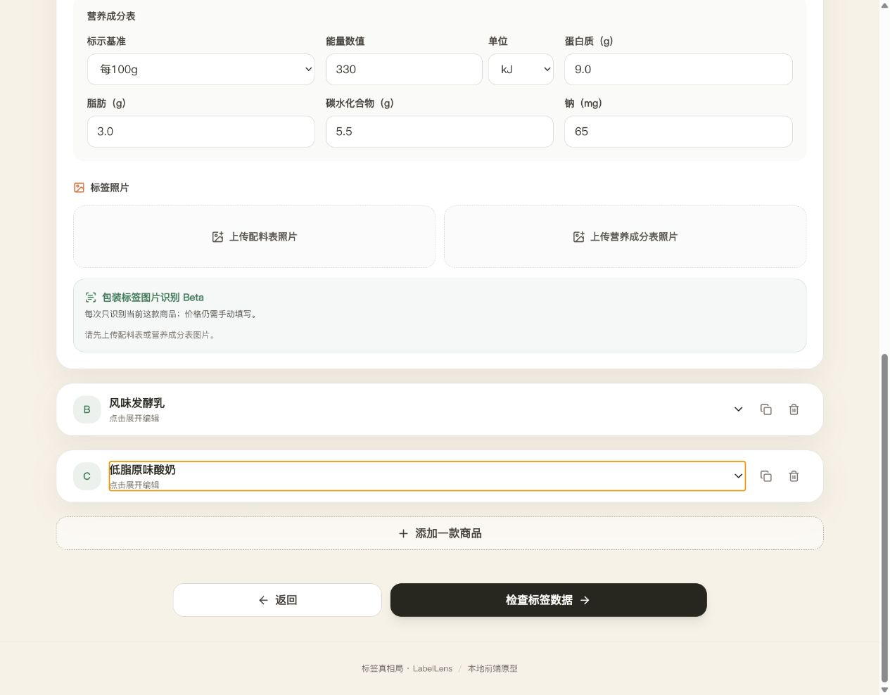
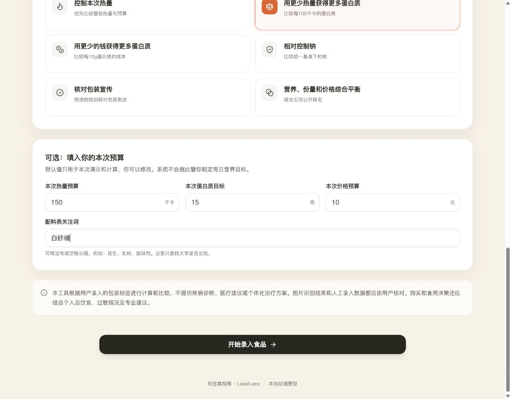
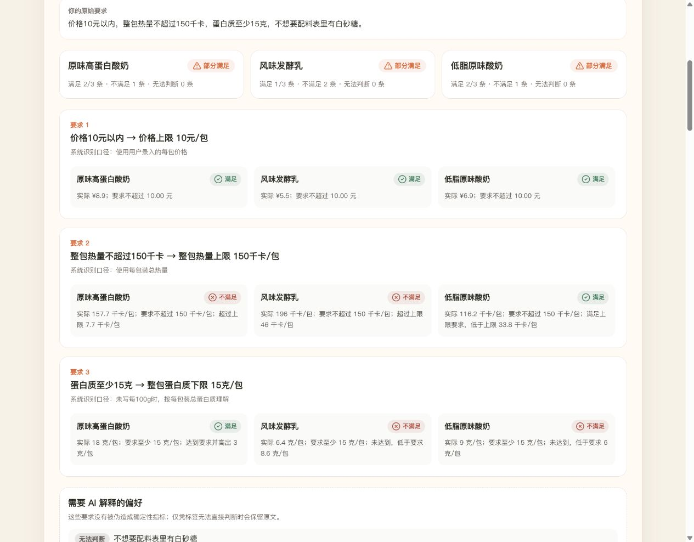
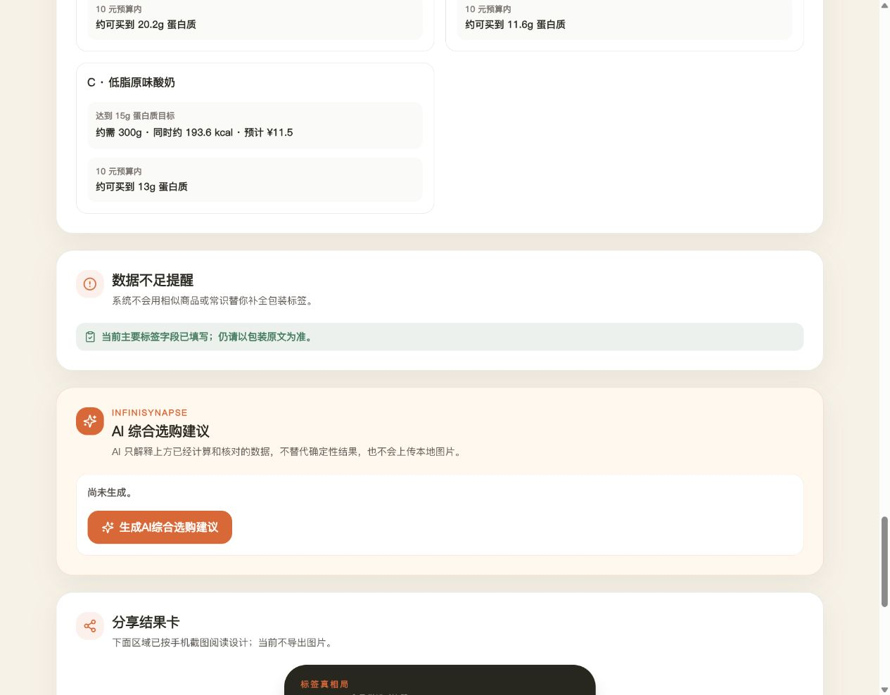
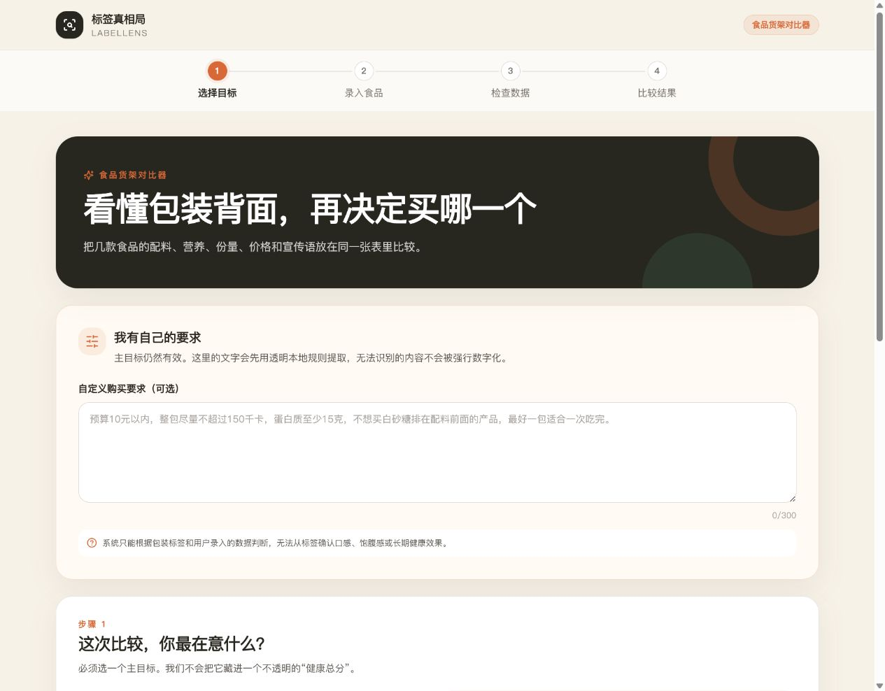

原味高蛋白酸奶
200g · ¥8.9
330 kJ/100g · 蛋白质 9.0g
用 Codex 边学边做
想请大家帮我试试

包装正面都写着“高蛋白、低脂、0蔗糖”，翻到背面却是每100g、整包、kJ和kcal。看了很久，最后还是经常凭感觉选。
200g · ¥8.9
330 kJ/100g · 蛋白质 9.0g
200g · ¥5.5
410 kJ/100g · 蛋白质 3.2g
180g · ¥6.9
270 kJ/100g · 蛋白质 5.0g

例如：预算、整包热量、蛋白质、配料关注词等。不同目标下，答案也可能不同。



由程序逐条计算，并显示依据。
保留原文，再交给 AI 解释。

蛋白质达标；整包热量超出上限 7.7 千卡。
价格达标；热量和蛋白质未满足本次要求。
整包热量达标；蛋白质低于要求 6 克。
不强行推荐“完美商品”，只展示这几款在当前要求下的差别。

在本次蛋白质密度目标下，A 更匹配。
A 每100千卡可获得 11.4g 蛋白质，在当前商品中排名第一。
若本次主要看蛋白质密度，可优先考虑 A；其他目标下请查看对应排名。
